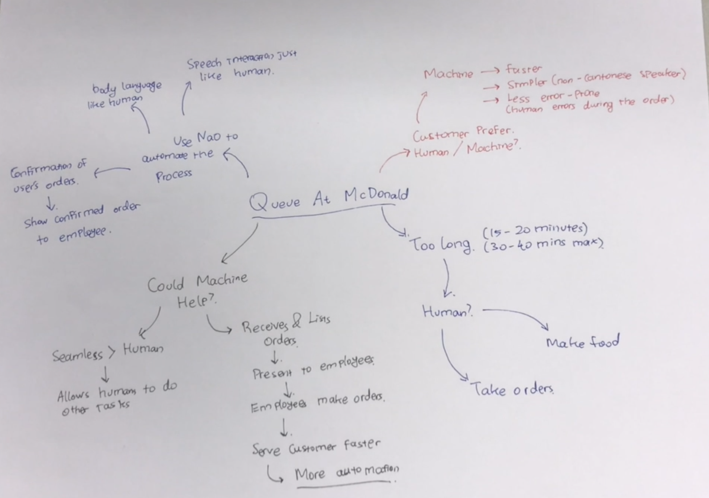
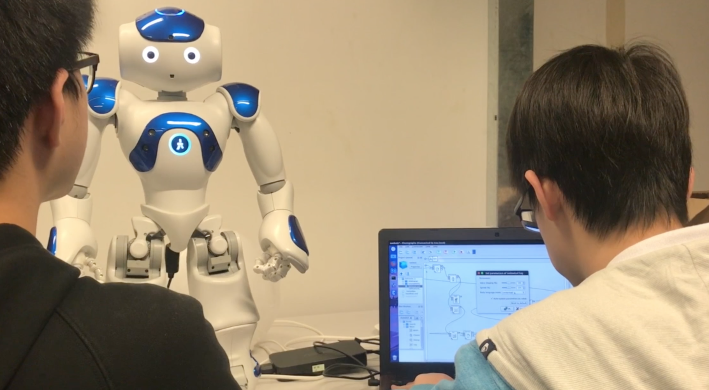
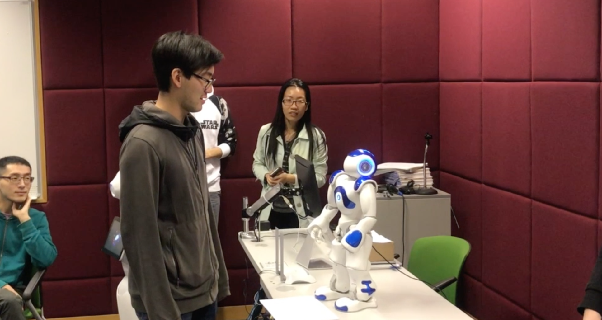
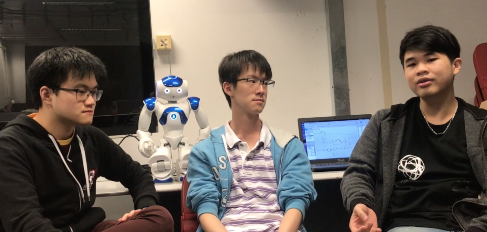

Project
This is record of the Human Robot Interaction project. The purposes of the project are understand user need, emphatize user, brainstorm and then develop the prototype. We using NaoroBot to make a prototype.
The Finished Project
This is the video of the finished project.

The Observation
First we go to observe at McDonald at LG5. And try to estimate waiting time for each user and we think the waiting time is too long. So we have an idea to use the robot.
The Interview
So we start to interview user. User prefer faster service at McDonald. Also accept an idea of using robot at McDonald, and think robot will work well as a cashier.

Brainstorming & Story Board
We brainstorm about the robot discuss about the best flow for users and discuss about how our machine will fasten the process. After we get the flow we start to design the story board.
Speed Dating
We test our story board with target user, and most of them accept the idea that robot automation will make the process faster.

Developing
We develop the automate cashier from our storyboard. However, I didn't take part alot in this development. I'm more focus on video editing for the team.

Usability Test
We test our robot in class. The first two tests go well, but when we add some complexity to the robot, it start to crash. So we decide to change from YES/NO question to use the hand interaction.

Reflection
So what we learn from this project is we know that user more accept to the automation technology, if the technology help to make the process better and faster.